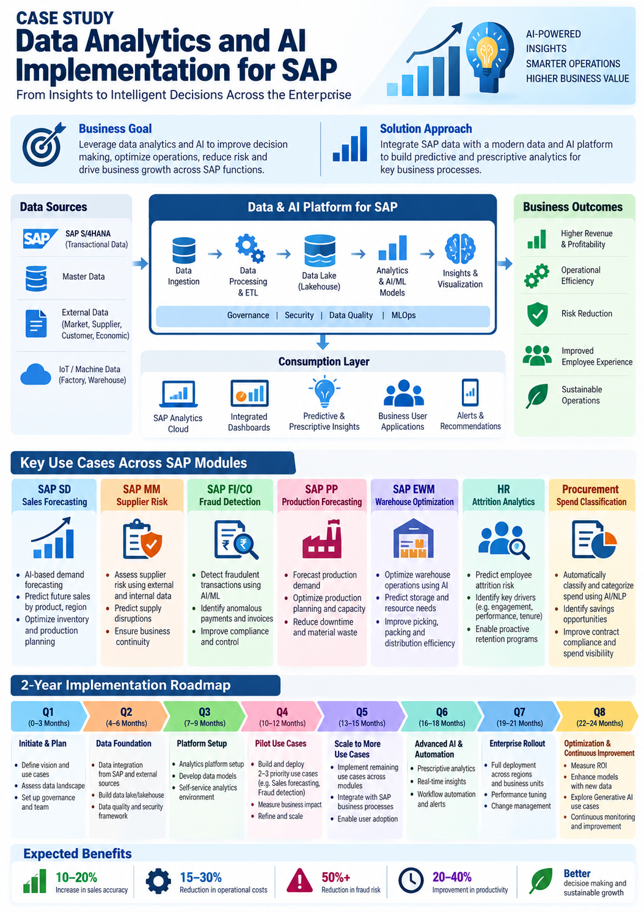

SAP • DATA & AI
Data Analytics & AI Implementation for SAP
SAP S/4HANA • Data Analytics • AI/ML • SAP Analytics Cloud • 2-Year Transformation Roadmap

SAP Data & AI transformation architecture, business use cases and two-year implementation roadmap.
Program Overview
SAP provides a rich source of transactional, master and operational data across finance, sales, procurement, manufacturing, warehouse management and human resources. A modern Data and AI program can transform this information into predictive insights and decision-support capabilities embedded into business processes.
This representative, non-confidential case study illustrates a two-year Data Analytics and AI transformation program built around SAP business functions. The approach combines SAP data with external enterprise data, a modern data platform, analytics, machine learning and business-facing insights.
Program Objective: Establish a governed enterprise Data & AI capability that converts SAP data into predictive and prescriptive insights, improves operational decision-making and supports measurable business outcomes.
Business Goals
- Improve decision-making through data-driven insights
- Increase forecasting accuracy
- Identify financial and operational risks earlier
- Optimize inventory, production and warehouse operations
- Improve workforce planning and retention
- Increase procurement and spend visibility
- Establish reusable enterprise Data & AI capabilities
Data & AI Platform Approach
The target approach connects SAP S/4HANA transactional and master data with external enterprise and operational data. Data is ingested, processed and governed before being used for analytics, machine learning and business decision support.
- Data Sources: SAP S/4HANA, master data, external market and supplier data, customer data, IoT and operational data.
- Data Ingestion: Batch and near-real-time ingestion based on business requirements.
- Data Processing: ETL/ELT, cleansing, transformation, enrichment and data-quality controls.
- Data Lake / Lakehouse: Scalable enterprise data foundation for analytics and AI workloads.
- Analytics & AI: BI, predictive analytics, machine learning and prescriptive insights.
- Consumption: SAP Analytics Cloud, dashboards, alerts, recommendations and business applications.
Data Governance & AI Controls
- Data ownership and stewardship
- Data quality and validation
- Security and role-based access
- Privacy and sensitive-data controls
- Model performance monitoring and MLOps
- AI output validation and human oversight
- Auditability and traceability
Key SAP Data Analytics & AI Use Cases
1. SAP SD — Sales Forecasting
Use historical sales, customer, product, region, seasonality and external-market information to improve demand forecasting and support sales and inventory planning.
- AI-based demand forecasting
- Product and regional sales prediction
- Demand trend and seasonality analysis
- Inventory and production planning support
2. SAP MM — Supplier Risk
Combine supplier performance, purchasing history and external information to identify supplier risk and support proactive procurement decisions.
- Supplier risk scoring
- Delivery and quality trend analysis
- External-risk signal integration
- Supply disruption prediction
3. SAP FI/CO — Fraud Detection
Use transaction patterns, accounting information and anomaly detection techniques to identify potentially unusual financial activity for further investigation.
- Anomaly detection in financial transactions
- Duplicate and unusual transaction analysis
- Vendor and payment risk indicators
- Investigation and compliance support
4. SAP PP — Production Forecasting
Use historical production, demand, capacity, material and operational information to improve production planning and capacity decisions.
- Production demand forecasting
- Capacity planning support
- Production bottleneck analysis
- Downtime and material planning insights
5. SAP EWM — Warehouse Optimization
Apply analytics and AI to warehouse activity, inventory, order and movement data to improve storage, picking, packing and distribution efficiency.
- Warehouse workload forecasting
- Storage and resource optimization
- Picking and packing optimization
- Distribution efficiency analytics
6. HR — Attrition Analytics
Analyze workforce information and relevant organizational signals to identify attrition patterns and support proactive workforce planning.
- Attrition-risk analysis
- Employee trend analysis
- Key-driver identification
- Retention and workforce-planning support
7. Procurement — Spend Classification
Use analytics and natural-language processing to classify purchasing transactions, improve spend visibility and identify procurement optimization opportunities.
- Automated spend classification
- Supplier and category analytics
- Savings opportunity identification
- Contract and spend compliance visibility
Two-Year Implementation Roadmap
Q1 — Initiate & Plan | Months 0–3
- Define vision, objectives and success KPIs
- Assess SAP and external data landscape
- Identify priority AI use cases
- Establish governance and program team
Q2 — Data Foundation | Months 4–6
- Design target data architecture
- Integrate priority SAP and external data
- Establish data lake/lakehouse foundation
- Implement data quality and security framework
Q3 — Platform Setup | Months 7–9
- Implement analytics and AI platform capabilities
- Establish self-service analytics environment
- Configure governance and access controls
- Prepare reusable data and ML pipelines
Q4 — Pilot Use Cases | Months 10–12
- Develop two to three priority use cases
- Pilot sales forecasting, supplier risk or fraud analytics
- Measure business impact and model performance
- Prepare scale-up plan
Q5 — Scale Use Cases | Months 13–15
- Implement additional SAP-module use cases
- Integrate analytics into business processes
- Expand dashboards, alerts and recommendations
- Drive business-user adoption
Q6 — Advanced AI & Automation | Months 16–18
- Introduce predictive and prescriptive analytics
- Enable real-time insights where appropriate
- Automate selected workflows and alerts
- Strengthen MLOps and model monitoring
Q7 — Enterprise Rollout | Months 19–21
- Complete enterprise rollout of approved use cases
- Expand adoption across business functions
- Optimize platform performance and operating model
- Embed AI capabilities into business processes
Q8 — Optimization & Continuous Improvement | Months 22–24
- Measure ROI and value realization
- Enhance models with new data and feedback
- Identify additional Generative AI opportunities
- Establish continuous monitoring and improvement
Program Manager Responsibilities
- Define Data & AI program strategy and roadmap
- Align business objectives with technology capabilities
- Prioritize AI use cases based on value and feasibility
- Coordinate SAP, data, cloud, AI and business teams
- Manage architecture, data and integration dependencies
- Establish governance, security and responsible AI controls
- Manage RAID items, budget, schedule and resources
- Coordinate model validation and business acceptance
- Drive adoption, change management and training
- Track value realization and executive KPIs
Key Program Metrics
- Forecast accuracy
- Data quality and completeness
- AI/model performance
- Business-user adoption
- Process cycle-time improvement
- Operational cost optimization
- Risk and anomaly detection effectiveness
- Productivity improvement
- Business value and ROI
Expected Business Outcomes
- Improved data-driven decision-making
- Higher forecasting and planning accuracy
- Improved operational efficiency
- Earlier identification of financial and supplier risks
- Optimized warehouse and production operations
- Improved workforce insights and planning
- Greater procurement and spend visibility
- Reusable enterprise Data & AI platform capabilities
Key Takeaway
SAP Data Analytics and AI transformation is most effective when technology modernization is directly connected to business outcomes. A phased two-year roadmap enables the organization to establish a strong data foundation, prove value through targeted AI use cases, scale successful capabilities across SAP functions and continuously improve decision-making through data and AI.